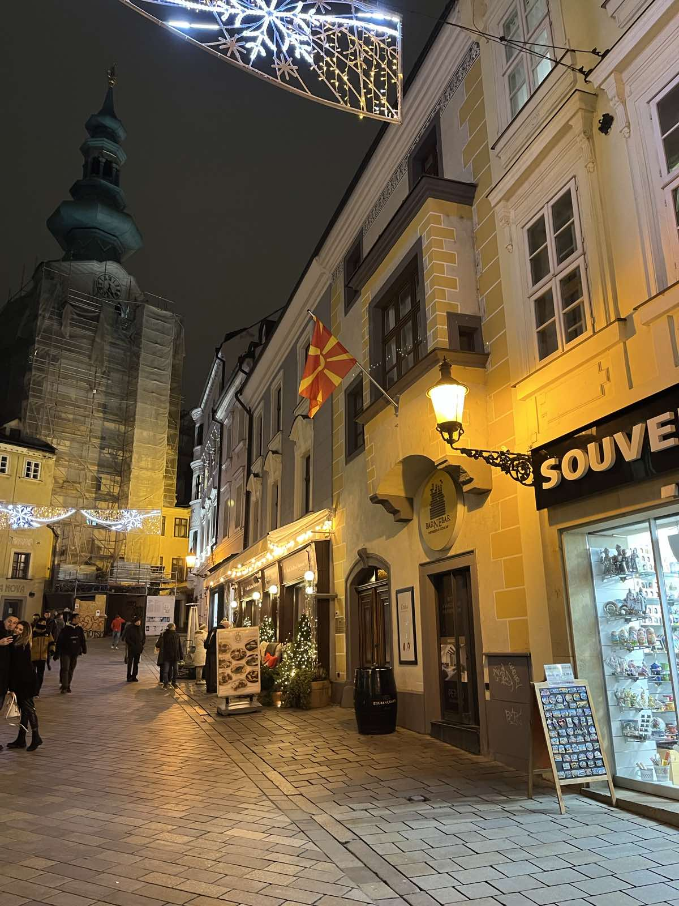

Stefan's Trips
I embarked on an unforgettable journey that took me to the enchanting islands of Malta and the culturally rich city of Vienna. As I arrived in Malta, I was captivated by the pristine beaches, crystal-clear turquoise waters, and the ancient remnants of its historical past. Exploring the picturesque streets of Valletta, the capital city, I marveled at the well-preserved architecture and the grandeur of St. John's Co-Cathedral.
Venturing further, I discovered the mystical allure of the Blue Grotto, a stunning natural wonder that left me in awe. After indulging in delicious Maltese cuisine and savoring the local delicacies, I bid farewell to Malta and set off to Vienna.
Stepping into this elegant city, I was greeted by imperial palaces, magnificent Baroque architecture, and a vibrant cultural scene. The grandeur of Schönbrunn Palace took my breath away, while the melodious sounds of classical music filled the air at the renowned Vienna State Opera. Exploring the charming streets of the Innere Stadt, I stumbled upon delightful coffee houses, where I indulged in Viennese coffee and scrumptious pastries.

From visiting the iconic St. Stephen's Cathedral to immersing myself in the vibrant atmosphere of Naschmarkt, my time in Vienna was a delightful blend of history, art, and culinary delights. Both Malta and Vienna left an indelible mark on my heart, and I departed with cherished memories of their beauty and unique experiences.
During my journey back home from Vienna, I had the opportunity to visit the beautiful city of Bratislava. Situated along the banks of the Danube River and only an hour away from the Austrian capital, Bratislava is the capital of Slovakia and boasts a rich history, stunning architecture, and a vibrant atmosphere.
As I strolled through the streets of Bratislava's old town, I was captivated by its charm and elegance. The city's historic center is a delightful maze of cobblestone streets, adorned with colorful buildings, charming cafes, and lively squares. The iconic Bratislava Castle, perched atop a hill, provided a magnificent view of the city and the surrounding landscape. Its impressive architecture and intriguing history made it a must-visit attraction.
From the vibrant streets of Valletta, where history came alive before our eyes, to the imperial grandeur of Vienna, where music filled our souls, and the charming streets of Bratislava, where we discovered hidden treasures at every turn, this adventure has been a tapestry of remarkable experiences.